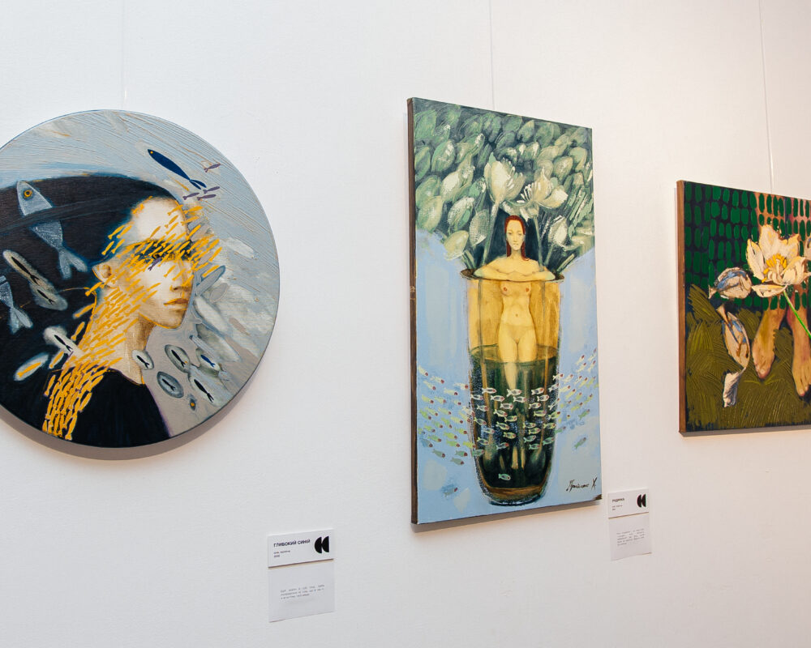

Види
Мистецтва
Мистецтво, як вираз людської креативності та емоційного вираження, об'єднує нас навколо унікальних ідей та переживань. Дозвольте мистецтву відкривати перед вами нові перспективи, надихати на роздуми та запрошувати до глибинного відчуття краси й сенсу.
Живопис
Живопис — вид образотворчого мистецтва, пов'язаний з передачею зорових образів за допомогою нанесення фарб на поверхню, таких як олійні фарби, гуаш, темпера та інших засобів техніки живопису.
Графіка
Графіка — вид образотворчого мистецтва, для якого характерна перевага ліній і штрихів, використання контрастів білого та чорного та менше, ніж у живописі, використання кольору.
Скульптура
Скульптура — лі́плення, пластика, вид образотворчого мистецтва, твори якого мають об'ємну, тривимірну форму і виконуються із твердих чи пластичних матеріалів.
Театр
Театральне мистецтво — вид мистецтва, особливістю якого є художнє відображення життя за допомогою сценічної дії акторів перед глядачами.
Музика
Музика — мистецтво організації музичних звуків, насамперед у часовій (ритмічній), звуковисотній та тембровій шкалі.
Танець
Танець — вид мистецтва, де художні образи створюються засобами пластичних рухів людського тіла. В танці відображається емоційно-образний зміст музичних творів.
Література
Література — різновид мистецтва, що відображає світ у художніх образах, створює нову художню реальність за допомогою засобів слова;
Кіномистецтво
Кіномистецтво — вид мистецтва, твори якого створюються за допомогою кінознімання реальних, спеціально інсценованих, або відтворених засобами анімації подій.
Фотографія
Фотографія – це мистецтво, яке здатне розповісти цілу історію, передати весь спектр емоцій.
Каталог
Робіт
Тут представлені роботи, доступні для покупки в галереї
За додатковою інформацією звертайтесь за нашими контактами


{kind=link}
{kind=link}
{kind=link}
Відео-арт
Форма образотворчого мистецтва
Відео-арт — напрямок медіа-мистецтва, в якому для вираження художньої концепції використовуються можливості відеотехніки, комп'ютерного та телевізійного зображення. Вікіпедія
Виставки
Виставки створюють унікальні можливості для вивчення, враження та взаємодії з різними сферами мистецтва, науки та культури.
-
Виставка Ігора Соловйова «Геометрія кольору»
7 Березня 2024Виставковий проєкт демонструє творчі доробки художника в галузі художнього дерева. У серії робіт «Анатомія кольору» митець досліджує тривимірний простір, градації кольору та динаміку об’єктів. Автор виставки про концепцію: «Геометрія кольору для мене – це визначення відстані, яку можна прокласти між двома кольорами. Фокус кольорових блоків з різних порід дерева, різної форми і конструкції відображає фізичні властивості сприйняття кольору.
-
Виставка Соні Морозюк “Осмислення”
12 Березня 2024Художниця представить свою першу персональну виставку у Львові, в якій експериментує з абстрактними зображеннями, надписами та грою слів у своїх роботах, привертає увагу своїм неординарним підходом. Поступово, поєднання надписів та абстрактних форм розкриває зміст робіт, звертаючись до важливих тем, думок та емоцій. Твори художниці проникають глибоко в сутність та розповідають правдиву історію про незламність та боротьбу українського народу.
-
Виставка Антона Ковача “Знак кольору”
25 Березня 2024Антон Ковач – один з представників Закарпатської школи живопису, що на даний час ділиться з поціновувачами новим баченням сучасної проблематики живопису. Виставка презентує серію абстрактних полотен створених в період 2021-2022 рр. Автор використовує колір і форму як ключові засоби виразності живопису, а також експериментує з орнаментальними мотивами. Частина робіт невипадково пов’язана з передчуттям війни, яку художник створив у другій половині 2022 р.
-
Виставка Володимира Лободи «Ті-1980-ті»
2 Квітня 2024Володимир Лобода – видатний живописець, графік, скульптор. Один із найяскравіших представників українського андеграунду. Народився у 1943 р. в Дніпрі. З 1966 навчався в Київському державному художньому інституті в живописній майстерні Тетяни Яблонської. І вже тоді починав експерементувати з кольором та формою, сміливо заявляв про себе як про митця-новатора безкомпромісного до постулатів псевдоакадемічної освіти й радянської ідеології. У 1973 році закінчив навчання, здобувши фах архітектора. Разом із дружиною Людмилою працював над низкою монументальних об’єктів у рідному місті.
-
Виставка Ростислава Лужецького «Гіпоглікемія»
8 Квітня 2024Персональна виставка Ростислава Лужецького «Гіпоглікемія». Переживання людиною критичних емоційних і фізичних станів чи не найчастіше осмислюються у мистецтві. Особистий досвід «кризи» провокує художника віднайти в ньому оновлення й перетворити надмір «зниження» життєвих сил на нову життєдайну енергію. Осмислений, проговорений, промальований до деталей внутрішній конфлікт між життям і смертю, спричинений критичним станом, вибудовує систему власних опорних точок виживання.
-

Христини Приймак “Продовжуй”
12 Квітня 2024Як зазначає художниця: «24 лютого я перестала малювати. Думала, що не зможу вже ніколи, що мистецтво війни, яке виникало повсюдно, це не для мене, що мені, як автору квітів, птахів і рибок уже сказати нічого. Пройшов час і перша робота, яку я створила після початку війни – «Продовжуй саджати квіти». Прийшло усвідомлення, що, поки ми живі, повинні продовжувати… Продовжувати любити, продовжувати дбати, продовжувати давати раду новим викликам, продовжувати творити, продовжувати пам’ятати, продовжувати оберігати і захищати, продовжувати мріяти, продовжувати будувати, і обов’язково продовжувати зрощувати дерева і квіти.
-
Денис Тимчишин “Несвідоме чуття”
16 Травня 2024«Несвідоме чуття» – пошуки художником стилістичних абстрактних плям та фактурних поєднань, колористичних рішень та стилістичних прийомів в абстрактному мистецтві. Представлені в експозиції твори – це своєрідна фіксація стану душі митця до початку та в час війни. Роботи наповнені світлом, темрявою, страхом, боротьбою та сильною енергетикою, демонструють глядачеві високу естетичну культуру та нові грані сучасного мистецтва. 24 лютого. Тривога. Війна. Художник поглянув на роботи, що були обперті до стіни й відчув мороз по шкірі. Зрозумів, що й справді передчував війну. Це підтверджують і назви робіт, що були створені за кілька днів до початку повномасштабного вторгнення: «10 днів до війни», «5 днів до війни», «3 дні до війни».
-
Виставка Миколи Курилюка “Amour propre”
22 Травня 20247 липня (вівторок) 2020 року о 18:00 у PM Gallery (м. Львів, вул. Коперника, 17) відбудеться відкриття персонального проєкту «Amour-Propre» молодого художника Миколи Курилюка. Водночас і просто, і складно говорити про тему любові. Як її підняти без очевидних чи банальних асоціацій? Як комунікувати про це художникові? Для мене як митця, процес творення живопису виступає місцем для щирості з полотном, площиною, де оголеність емоцій не вербалізується напряму, а за допомогою кольору, експресії, спонтанного чи продуманого руху пензля. Це можливість не описати очевидне, а підштовхнути будь-кого до комунікації з автором, з середовищем, з самим собою.
-
Виставка Петра Грицюка Метал
29 Травня 202422 листопада о 18:00 в PM Gallery відбудеться відкриття персонального арт-проєкту молодого художника Петра Грицюка, який активно працює в напрямку експериментального художнього металу. На виставці вперше будуть представлені технологічно складні кінетичні об’єкти, які поєднують естетику матеріалу, якісні візуальні ефекти та глибокий філософський зміст.
Про нас
Ми ставимо перед собою доволі просту і водночас амбітну мету – наповнити життя атмосферою та духом мистецтва, новими формами, змістами та форматами.
Тому ключове завдання нашої роботи – пожвавлення творчих процесів і актуалізація локальної арт-сцени. Вже сьогодні Центр є потужним осередком культурного життя Закарпаття, і ми прагнемо залучати до нього дедалі більше творчих людей як з України, так і з інших країн.
Своє ж глобальне завдання ми вбачаємо у створенні простору для комунікації. Нам подобається атмосфера виставкових залів, атмосфера музичних виступів та їх підготовки – і ми хочемо, аби поруч з нами було якомога більше людей, котрих це надихає так само як і нас. Мистецтво створює найкращу атмосферу для суспільного діалогу, спілкування людей, які відчувають себе частиною соціуму, громади, міста, країни…
Домець Вікторія, директор "VA Gallery":
"Ми продовжуємо втілювати в життя формат арт-вечорів, який об’єднує одночасно декілька мистецьких презентацій. Кожна з виставок, які відкрились в рамках Тріарт evening, унікальна! Ми прагнемо, аби кожен відвідувач, незалежно від віку та вподобань, завітавши до Галерея мистецтв "VA Gallery знайшов для себе джерело натхнення".
Контакти
VA Gallery
Зв'яжіться з нами